Referencia de Cálculo
Reglas de límites
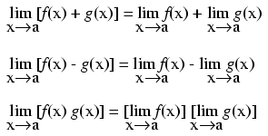
Derivada de una constante
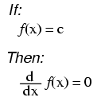
("c" es una constante)
Common derivatives
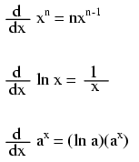
Derivadas de funciones exponenciales de e
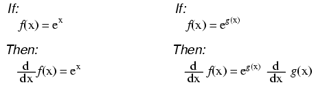
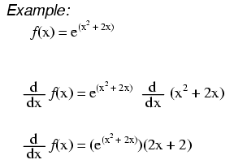
Derivadas trigonométricas
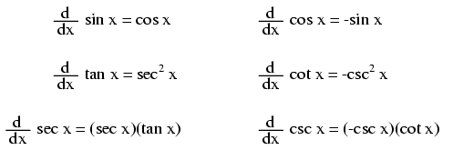
Reglas de derivadas
Regla de la constante
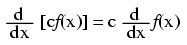
Regla de las sumas
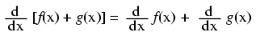
Regla de las diferencias
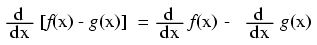
Regla del producto
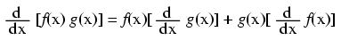
Regla del cociente
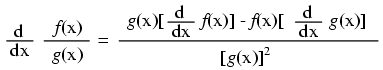
Regla de la potencia
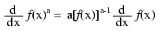
Funciones de otras funciones
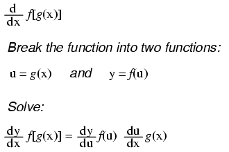
La antiderivada (integral indefinida)
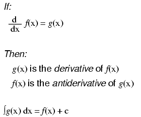
Note algo importante aquí: tomar la derivada de f(x) puede dar precisamente g(x), pero tomar la antiderivada de g(x) no necesariamente da f(x) en su forma original. Ejemplo:
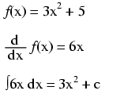
¡Tenga en cuenta que la constante c es desconocida! La función original f(x) podría haber sido 3x2+ 5, 3x2+ 10, 3x2 + cualquier cosa, y la derivada de f(x) todavía habría sido 6x. Entonces, determinar la primitiva de una función es un poco menos seguro que determinar la derivada de una función.
Antiderivadas comunes
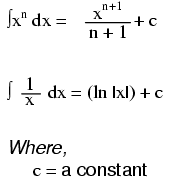
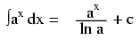
Antiderivadas de funciones exponenciales de e
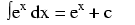
Nota: esta es una propiedad muy singular y útil de e. Como en el caso de las derivadas, la primitiva de dicha función es esa misma función. En el caso de la antiderivada, también se añade al final un término constante "c".
Reglas de antiderivadas
Regla de la constante
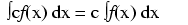
Regla de las sumas
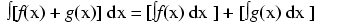
Regla de las diferencias
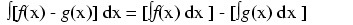
Integrales definidas y el teorema fundamental del cálculo
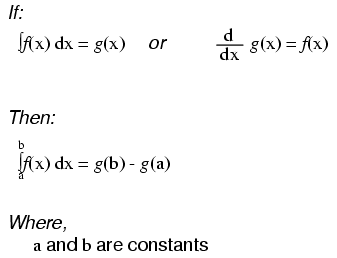
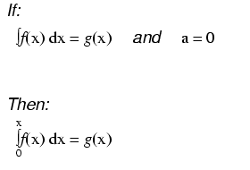
Ecuaciones diferenciales
A diferencia de las ecuaciones normales donde la solución es un número, una ecuación diferencial es aquella en la que la solución es en realidad una función y en la que al menos una derivada de esa función desconocida forma parte de la ecuación.
Al igual que cuando se encuentran las antiderivadas de una función, a menudo nos queda una solución que abarca más de una posibilidad (considere los muchos valores posibles de la constante "c" que normalmente se encuentran en las antiderivadas). El conjunto de funciones que responden a cualquier ecuación diferencial se denomina "solución general" para esa ecuación diferencial. Cualquier función de ese conjunto se denomina "solución particular" para esa ecuación diferencial. La variable de referencia para la diferenciación e integración dentro de la ecuación diferencial se conoce como "variable independiente".
Lecciones en circuitos eléctricoscopyright (C) 2000-2023 Tony R. Kuphaldt, según los términos y condiciones delCC BY License.